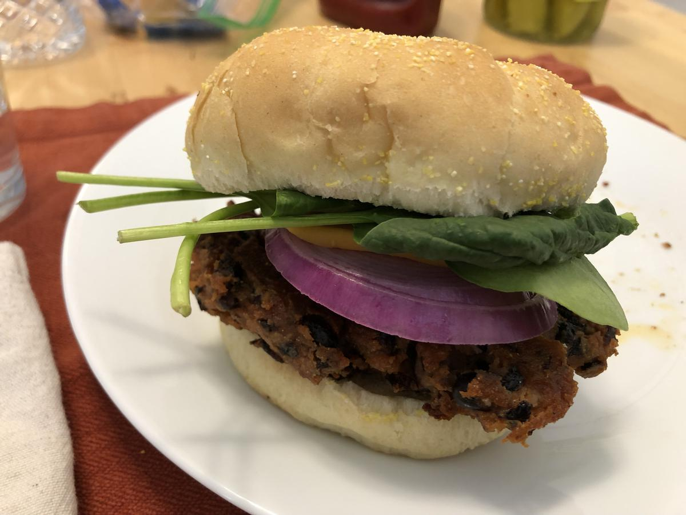

Based on https://www.washingtonpost.com/recipes/black-bean-burgers/15322/
Personal rating: 5 / 5

2x 15-oz cans of black beans, drained and rinsed
Generous 1 cup chickpea flour
3 Tbsp tomato paste
2 Tbsp plain, unsweetened applesauce
1 tsp chili powder
2 tsp tamari
2 tsp apple cider vinegar
2 Tbsp fresh lime juice
1/2 tsp salt
1/2 tsp black pepper
Vegetable oil, for shallow frying
8 whole wheat buns
Toppings such as cheese, slices of tomato or onion, pickles, mustard and/or ketchup